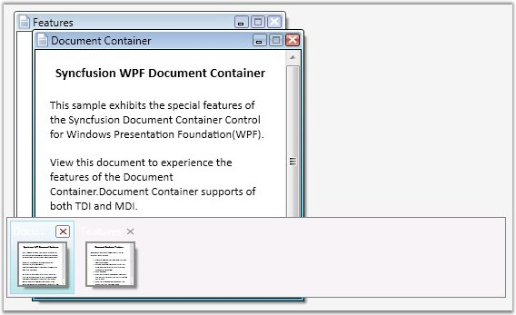
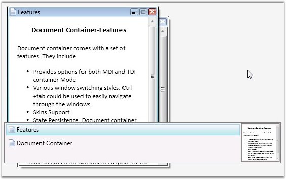
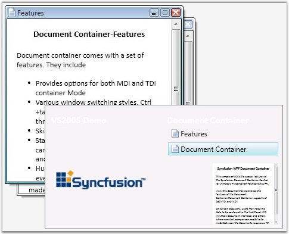

Document Container enables the users to switch between the windows using keyboard keys. This feature facilitates easy navigation between the documents. By using CTRL + TAB combination of keys in the keyboard, user can navigate between windows. Window switchers are available for the Document Container for this purpose.
Currently five modes of window switchers are supported. They are as follows.
· Immediate
· List
· QuickTabs
· VS2005
· VistaFlip
To set the Quick Tab Mode for the window switchers, use the following code.
|
[XAML]
<!-- Adding Document Container --> <syncfusion:DocumentContainer Name="DocContainer" SwitchMode="QuickTabs" Mode="MDI"> ….... ….... </syncfusion:DocumentContainer> |
|
[C#]
//Creating instance of Document Container DocumentContainer DocContainer = new DocumentContainer();
//Set mode as MDI DocContainer.Mode = DocumentContainerMode.MDI;
//Set switch mode DocContainer.SwitchMode = SwitchMode.QuickTabs; …....... ….......
//Adding control to the window this.Content = DocContainer; |

Figure 402: SwitchMode = "QuickTabs"

Figure 403: SwitchMode = "List"

Figure 404: SwitchMode = "VS2005"